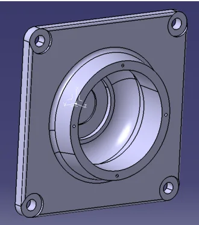
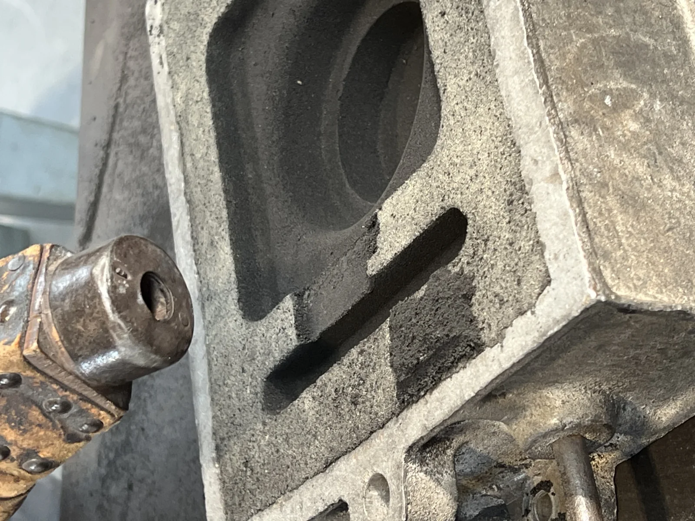
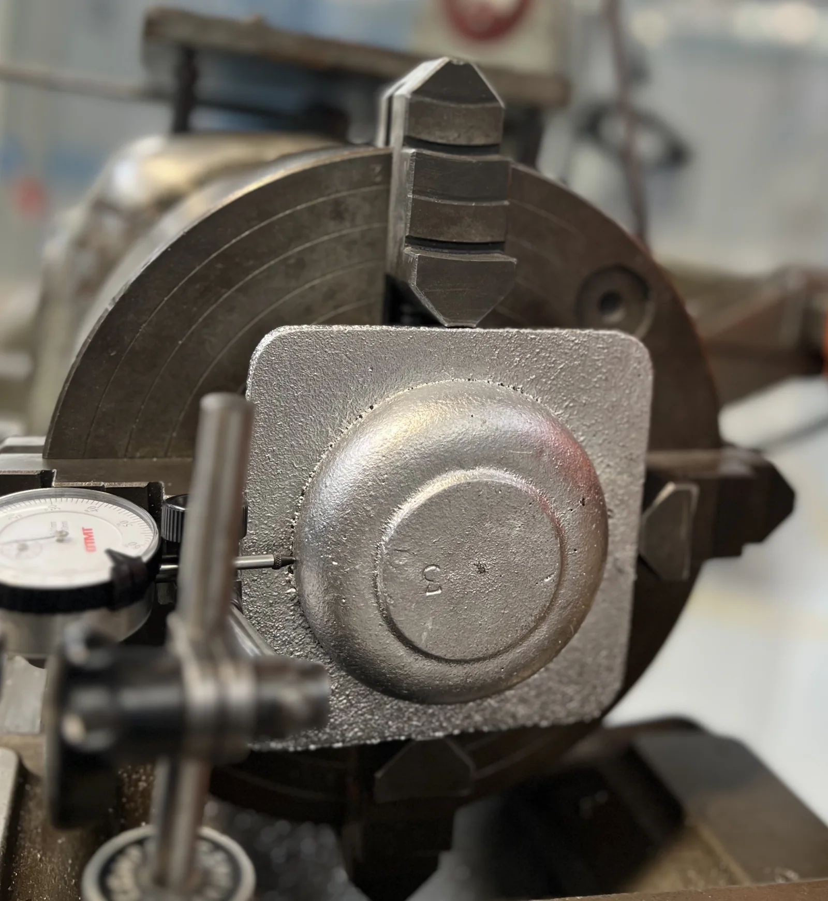
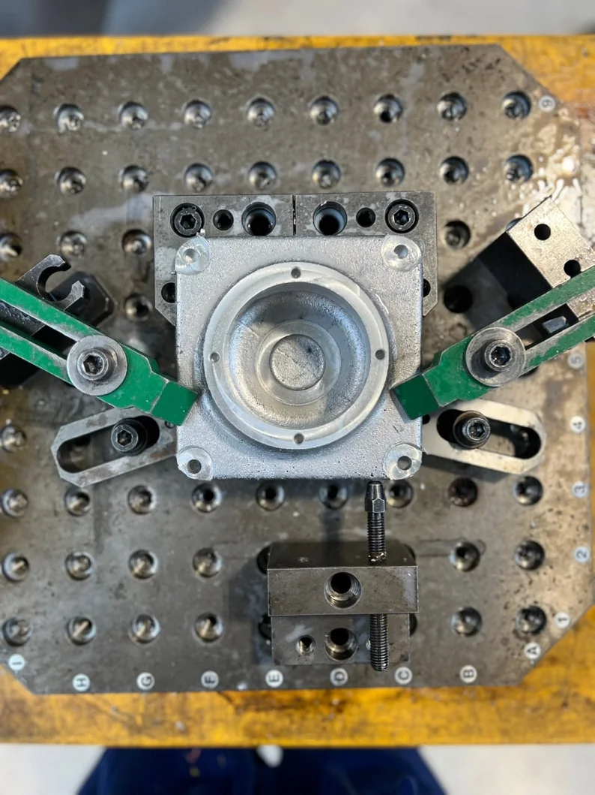
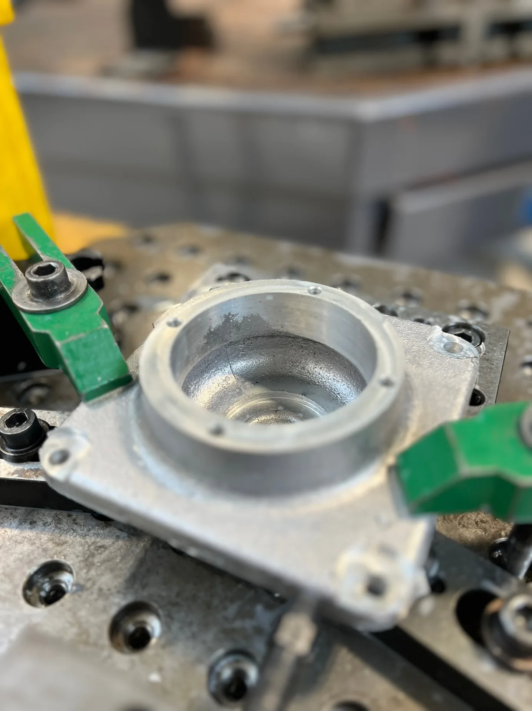
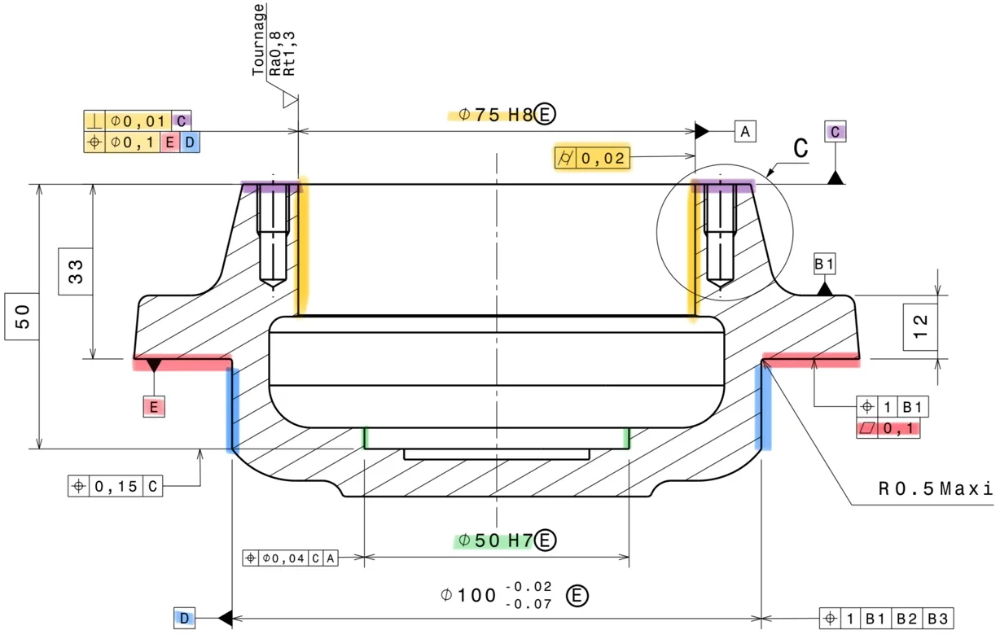

// MANUFACTURING · FOUNDRY · METROLOGY
From Foundry to Metrology
Industrializing an AlSi7 ball thrust bearing housing through casting, conventional and CNC machining, then dimensional inspection.
01 — Foundry
Designing the raw part before pouring metal
Preparing the mould
The casting design had to provide enough material for later machining while remaining simple and robust in the workshop. The chosen joint plane lets the core remain stable under gravity without an additional high-temperature support.
- Machining allowances added to critical surfaces.
- Draft angles integrated for safe demoulding.
- No vent required because the sand was naturally permeable.
- No riser used because the wall thickness was considered sufficiently uniform.
- Holes and threads were intentionally closed for casting.


02 — Machining
Building accurate references in two phases
Conventional turning
The raw casting was held in hard jaws and aligned with a dial indicator before machining the principal reference surfaces. Surface D was prioritized because its tolerance was tighter than the general ISO 2768-mK requirements applied elsewhere.
The older SIM lathe was limited to 2,800 rpm. A conservative setting of 1,000 rpm was selected for safety, below the theoretical optimum for the chosen tools—a compromise that could affect surface finish and repeatability.


CNC contouring and drilling
A dedicated fixture maintained the specified position while the CNC machine completed contouring, drilling, chamfering and tapping. The origin was set with an indicator, and abundant lubrication controlled heat and supported a cleaner surface finish.
- Contour engagement rather than full-width slotting.
- Spindle speed adapted to the machine's 7,500 rpm limit.
- Cut depth validated progressively under workshop conditions.



03 — Diagnosis
When a correct toolpath cannot recover a deficient blank

Root-cause reasoning
A missing allowance appeared in one localized area. Because the CNC program had been validated, the leading explanation was not the toolpath itself but the geometry and positioning of the cast blank.
- The casting model or core needs additional allowance in the affected zone.
- A core or mould offset may have introduced global asymmetry.
- Phase-200 referencing could amplify an error already present in the blank.
- A pre-machining allowance check would catch the issue before critical material removal.

Preparing a second iteration
- Increase local machining allowances and revalidate the core geometry.
- Standardize the fixture, datums and origin-setting procedure for phase 200.
- Inspect the blank before CNC machining to confirm allowance distribution.
- Produce a second version to verify repeatability before considering a series process.
04 — Metrology
Turning measurements into manufacturing evidence
Geometric inspection results
A coordinate-measuring machine sampled each feature and reconstructed the associated geometric elements. The results show that some operations were controlled, while others reveal the accumulated effect of blank geometry and referencing.
Flatness E
PassMeasured 0.015Limit 0.100 mm
Cylindricity A
Near limitMeasured 0.018Limit 0.020 mm
Perpendicularity
OutMeasured 0.116Limit 0.100 mm
Position
OutMeasured 0.750Limit 0.100 mm

Final quality is not created by machining alone. It is built through a coherent chain of blank design, positioning, cutting conditions and measurement.
The project connected a visible defect and measured non-conformities to their likely upstream causes. That causal reading is the foundation for correcting the casting model, securing the CNC setup and moving from a workshop prototype toward a controlled, repeatable process.